#minecraft:decorated_pot_ingredients
物品标签 · 39 个已收录成员
标签成员 (39)
 红砖
红砖minecraft:brick
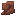
镰刀纹样陶片atmospheric:scythe_pottery_sherd
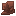
多肉纹样陶片atmospheric:succulent_pottery_sherd
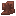
太阳纹样陶片atmospheric:sun_pottery_sherd
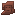
反射纹样陶片neapolitan:reflection_pottery_sherd尖叫纹样陶片
neapolitan:scream_pottery_sherd
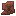
蜘蛛纹样陶片neapolitan:spider_pottery_sherd
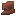
零食纹样陶片neapolitan:snack_pottery_sherd
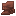
捕食纹样陶片upgrade_aquatic:predator_pottery_sherd颌骨陶片
wan_ancient_beasts:jaw_pottery_sherd
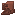
漫步陶片wan_ancient_beasts:stroll_pottery_sherd
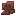
尖刺陶片wan_ancient_beasts:spike_pottery_sherd
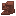
喙部陶片wan_ancient_beasts:beak_pottery_sherd
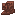
坠落陶片wan_ancient_beasts:fall_pottery_sherd
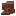
化石陶片wan_ancient_beasts:fossil_pottery_sherd
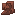
浪潮陶片wan_ancient_beasts:tide_pottery_sherd
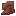
垂钓纹样陶片minecraft:angler_pottery_sherd
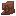
弓箭纹样陶片minecraft:archer_pottery_sherd
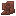
举臂纹样陶片minecraft:arms_up_pottery_sherd
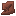
利刃纹样陶片minecraft:blade_pottery_sherd
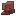
佳酿纹样陶片minecraft:brewer_pottery_sherd
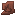
烈焰纹样陶片minecraft:burn_pottery_sherd
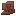
危机纹样陶片minecraft:danger_pottery_sherd
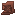
探险纹样陶片minecraft:explorer_pottery_sherd
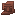
挚友纹样陶片minecraft:friend_pottery_sherd
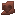
爱心纹样陶片minecraft:heart_pottery_sherd
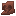
心碎纹样陶片minecraft:heartbreak_pottery_sherd
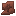
狼嚎纹样陶片minecraft:howl_pottery_sherd
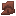
采矿纹样陶片minecraft:miner_pottery_sherd
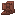
悲恸纹样陶片minecraft:mourner_pottery_sherd
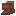
富饶纹样陶片minecraft:plenty_pottery_sherd
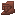
珍宝纹样陶片minecraft:prize_pottery_sherd
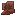
麦捆纹样陶片minecraft:sheaf_pottery_sherd
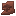
树荫纹样陶片minecraft:shelter_pottery_sherd
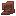
头颅纹样陶片minecraft:skull_pottery_sherd
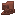
嗅探纹样陶片minecraft:snort_pottery_sherd涡流纹样陶片
minecraft:flow_pottery_sherd
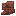
旋风纹样陶片minecraft:guster_pottery_sherd
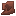
刮削纹样陶片minecraft:scrape_pottery_sherd
使用该标签的配方
无